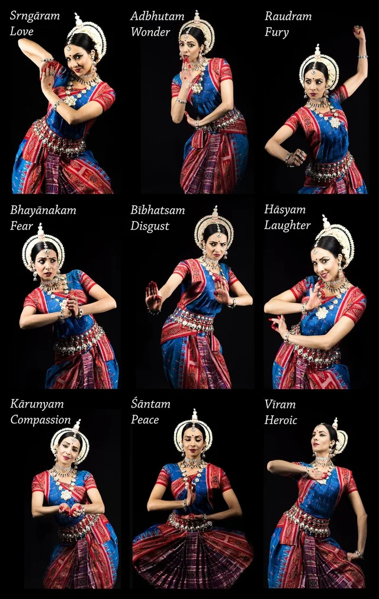
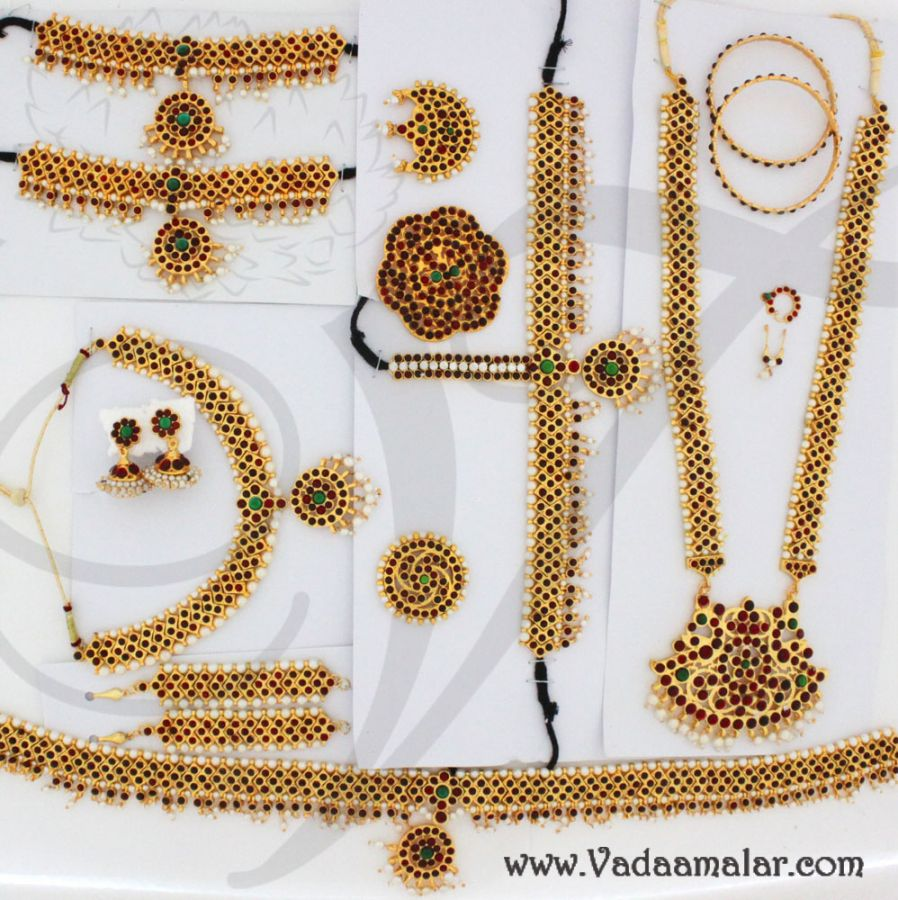
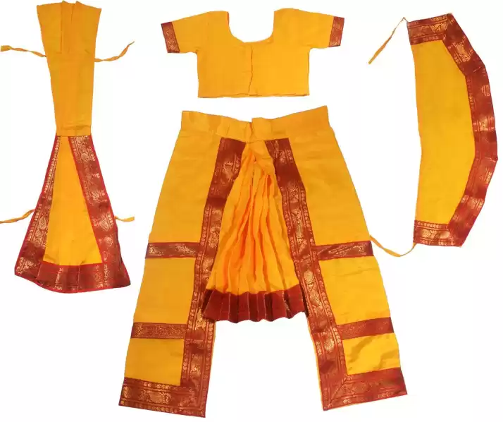

Learn more about hand gestures, expressions, costume and jewellery by clicking it
Single Hand Gestures
Double Hand Gestures
9 Navarasas (Expressions)
Executing the 9 Navarasas (Expressions)
Tips to Improve Facial Expression
Temple Set
Bharatanatyam Costume
 How to wear the Bharatanatyam costume
How to put on the Temple Set